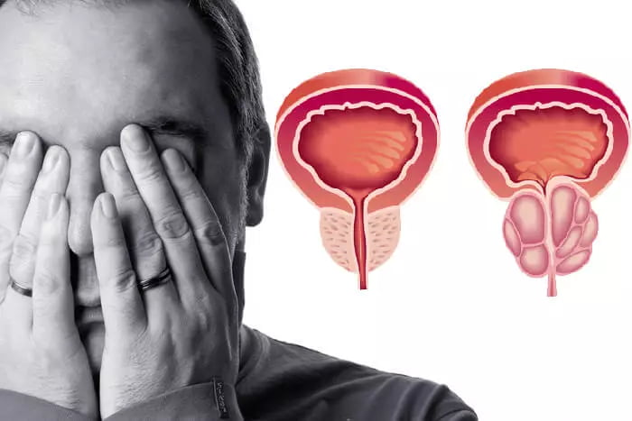
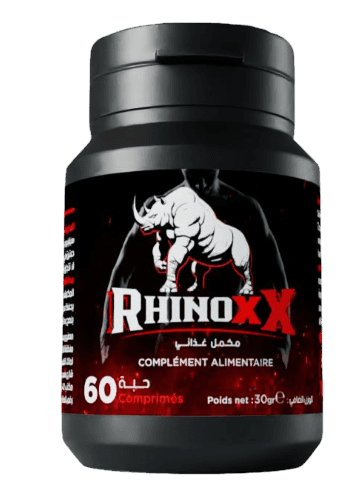

الطريقة الأفضل للتخلص من
(مشاكل البروستات في خلال أسابيع ) سوق نشرح لكم الطريقة اليوم
وفي الوقت نفسه، في الجزائر تم الكشف عن طريقة جديدة للتخلص من مشاكل البروستات و التهاب البروستات . (إذا كنت تريد معرفة المزيد عن هذه الطريقة، اقرأ المقال أدناه).
التهاب البروستاتا هي المشكلة الأكثر شيوعاً بين الرجال الذين تزيد أعمارهم عن 40 عاما، وفي السنوات الأخيرة، لاحظ الجميع اتجاها غير ساراً : المشكلة أصبحت أيضاً عن الصغار سن و ليس الكبار فقط . بدأ الرجال بشكل متزايد في اللجوء إلى مواد كيميائية و منشطات ضارة للجسم و القلب و للأسف هم الأن يعانون من مشاكل بالقلب نتيجة إستخدام هذه المنشطات و المواد الكيميائية في سن 30 و 25 وحتى 20 عامًا.
فيما يلي العديد من العوامل التي يمكن أن تسبب مشاكل البروستاتا:
- الجلوس المتكرر
- الحياة الجنسية غير المنضبطة
- مشاكل صحية معدية
- هناك تاريخ عائلي للوراثة
- ضغط الدم
في العالم الحديث، من السهل جدًا أن تعاني من مشاكل في البروستاتا. بالنسبة لشخص في سن 25 عامًا، ولشخص يبلغ من العمر 45 عامًا، فهي مجرد مسألة وقت.
تحقق إذا كان لديك أعراض التهاب البروستاتا:
- ألم حاد في أسفل الظهر (ألم الظهر)
- تعب
- ألم عند التبول
- الشعور بالحرقة
- التبول غير المنضبط
- التبول المتكرر في الليل
- وجود الدم في البول
- مشاكل في التبول
- انتهاك القذف
- آلام التشنج
في عام 2019، تم معرفة معلومات رهيبة: ان العديد من الرجال الذين تزيد أعمارهم عن 37 عامًا يعانون من مشاكل في البروستاتا. لتحديد وجود التهاب البروستاتا، لا يلزم أي تدريب صعب و معظم أعراضه محددة:
-
ألم:
- - في أسفل البطن، حول كيس الصفن.
- - وخاصة في العضو الذكري .
-
مشاكل في المسالك البولية:
- - التبول المتكرر، حرقان في البول .
- - المثانة دائما تشعر "بالامتلاء
- - صعوبة في التبول (تدفق ضعيف)
-
الاضطرابات الجنسية:
- - انخفاض الرغبة الجنسية.
- - انخفاض في مدة وجودة الانتصاب.
-
ضعف القذف:
- - سرعة القذف أو حتى مشاكل في تحقيقه
- - ضعف القذف
بالإضافة إلى ذلك، زيادة التعب الجسم والتهيج.
على الرغم من الانخفاض الواضح في نوعية الحياة، يعيش العديد من الرجال مع التهاب البروستاتا لسنوات ويختارون تحمل الانزعاج، دون أن يدركوا العواقب التي لا رجعة فيها.

في غياب الحل للتخلص من التهاب البروستات يؤدي التهاب البروستاتا دائمًا إلى ورم البروستاتا الحميد
يمكن فهم هؤلاء الأشخاص جزئيا: تشخيص التهاب البروستاتا يسبب الحرج لدى جميع الرجال، وأحيانا حتى الاكتئاب الشديد. بالإضافة إلى ذلك، في الغالبية العظمى من الحالات بعد تشخيص "التهاب البروستاتا"، تتحول زيارة المختصإلى كابوس . يقوم الجميع بإستخدام المواد الكيميائية الضارة و المنشطات و للأسف تقوم هذه المواد الكيميائية فقط بتخفيف الأعراض الأكثر حدة, ولكن بمجرد توقف الشخص عن إستخدامها، "يعود" التهاب البروستاتا.
كيف تتخلص من التهاب البروستاتا (وكيف لا ينبغي التخلص منه )
لسوء الحظ، لا يمكنك التخلص بسهولة من التهاب البروستاتا، حتى لو كنت تريد ذلك حقًا.
الحل القياسي للتخلص من التهاب البروستاتا:
كثير من الرجال في الجزائر لا يعرفون أنهم مصابون بالتهاب البروستاتا، على الرغم من أن نوعية حياتهم قد تدهورت بشكل كبير. في الواقع لماذا؟ طبيعي... لا يزال هناك الكثير من الأشخاص الذين يكون وعيهم في حده الأدنى، مما يجعلهم يتجاهلون كل الإشارات السيئة التي يشعر بها الجسم.
إذن ما العمل إذا كان الرجال يعانون من هذه المشكلة؟
الإجراء القياسي للتخلص من التهاب البروستاتا يبدأ بالذهاب إلى أخصائي. وبصرف النظر عن الطرق العادية، فإنهم عادةً ما يوصون أيضًا بتدليك البروستاتا أو التخلص منها باستخدام معدات أخرى لتخفيف الأعراض. وهذا الإجراء يجعل الرجال محرجين بعض الشيء وهذه الطريقة ليست ممتعة، لأن التدليك يتم عن طريق الإصبع من خلال فتحة الشرج. نعم، كل شيء، يتطلب التدليك أيضًا ما متوسطه 10-14 جلسة. إن الدفع لكل جلسة مكلف للغاية، ويجب أن تعرف بنفسك كم يكلف. حسنًا، لم يتم إجراء هذا النوع من التدليك في الخارج منذ أكثر من 20 عامًا، لأن هناك طرق حديثة يمكنها المساعدة على التخلص من التهاب البروستاتا نفسه! البديل الصحيح هو تناول المكملات الغذائية بمجرد ظهور الأعراض الأولى. الآن السوق مشغول بـ RHINOXX الذي أثبتت فعاليته. بقدر ما أعرف، هذا المنتج ليس مربحا للشركات الكبيرة. يعني يختلف عن المنتجات الأخرى، لأن المنتجات الأخرى تتكون من الكيميا و تجعل الناس يدمنون استخدامه بشكل مستمر، مما يجعل الناس يضطرون لشرائه مرارا وتكرارا. على الرغم من أن هناك وسيلة رخيصة
هل يمكن إبعاد الرجال الجزائريين عن مشاكل البروستات ؟
نعم . في الوقت الحالي يوجد شركة تصنع المكمل الغذائي RHINOXX في الجزائر بصناعة جزائرية و مكونات مستوردة من اوروبا و دعونا الأن نلقي نظرة على أهمية المكمل الغذائي RHINOXX :
هنا سوف نتعرف على المكمل الغذائي RHINOXX و لماذا هو الإختيار الأول لخبراء المسالك البولية
|
 RHINOXX |
|
|---|---|
| السعر : | |
| يمكنك الحصول عليه بتخفيض 65% لجميع الجزائريين | |
| المفعول : | |
| يخفف من التهاب البروستاتا (حتى المزمن) نهائياً. دورة واحدة تكفي | |
| مميزات إضافية : | |
|
|
| آثار جانبية: | |
| ليس له آثار جانبية. المكونات طبيعية تماما | |
| مبدأ العمل : | |
| إنه يعمل على البروستاتا ككل بفضل تركيبة مختارة خصيصًا مكونة من 6 مكونات طبيعية، وله تأثير مضاد للالتهابات ومقوي. يزيل جميع المشاكل الصحية المسببة لمشاكل البروستاتا، ويحسن بنية ووظيفة غدة البروستاتا. يوصى به لالتهاب البروستاتا المزمن والاحتقاني والبكتيري. | |
| مكونات : | |
|
|
في بلدنا، لا تزال الشركة المصنعة قادرة على جعل هذا المكمل في متناول الجميع! بعد مفاوضات طويلة مع الأشخاص المؤثرين، تمكنا من إطلاق برنامج تخفيض . الغرض من البرنامج: إعطاء الفرصة لكل شخص للتخلص من مشاكل التهاب البروستاتا، بغض النظر عن حالته المالية، وعدم وصوله إلى مرحلة السرطان. كجزء من هذا البرنامج الترويجي سوف تحصل على RHINOXX بخصم 65 %
يمكنك شراء RHINOXX عن طريق الخطوات التالية :
- ملئ النموذج الرسمي للطلب بالأسفل
- بعد ذلك سوف يتم التواصل معك لتأكيد عنوان الوصول
- يتم الدفع فقط بعد إستلام المنتج و هو الشيء الذي جعل الكثير مطمئنون من جودة هذا المنتج
- بعد ذلك يمكنك إستلام المنتج عن طريق عامل التوصل في خلال اقرب وقت ممكن
هام ! الأن يمكك الحصول على تخفيض 65% عند شرائك المنتج في الجزائر اليوم عن طريق ملئ نموذج الطلب الرسمي بالأسفل
نموذج الطلب الرسمي
السعر قبل التخفيض : 17000 DZD
السعر بعد التخفيض : 5999 DZD
عند شرائك دورة RHINOXX
إتمام الطلب بتخفيض 65%
جمال
شريتو هاد مكمل ،بزاف هايل ،ننصحكم به👍